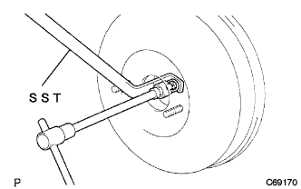

Brake boot Star ASSY installation |
| 1. Brake boo Star ASSY installation |
Attach the brake boot star ASSY via a new brake boot gasketto.
Attach the crab lock nut and push rod crab to the brake boot Star ASSY.
 |
Attach 4 nuts.
With clip, connect the vacuum hose to the vacuum -Ek valve.
| 2. Brake Master Cylinder Reserve Bracket Installation |
With three bolts, attach the brake master cylinder reservoir bracket to the body.
Attach the accelerator control cable clamp.
| 3. Brake boo stap -off rod inspection / coordination |
Step the brake pedal several times while stopping the engine and remove the negative pressure in the brake booster.
 |
SST is applied to the master cylinder via the Sitsukunes Gauge (0.3mm).
Lightly apply the SST rod to the master cylinder piston and fix it.
Apply chiyoke to the SST rod plane, turn the SST inverted, attach it to the brake boot star ASSY, and check the gap.
|  |
In the case of outside the reference value, use a SST to fix the rotdo, use a botuku wren (7mm) to turn the rotdo tip to adjust the length.
Further, the box wren (7mm) is rotated by 0.5 rotation (180 °) and the rod tip is pushed to 0.5 mm in the back.(VSC car without VSC)
| Vehicle type | Frame No. |
|---|---|
| NNP10-AGSGK | 0017402 or later |
| NNP11-AGSGK | 0019648 or later |
| 4. Brake Master Cylinder SUB-ASSY installation |
 |
With two nuts, attach the brake master cylinder ASSY to the brake boot star ASSY.
Attach the bolt of the brake master cylinder reservoir to match the master cylinder reservoir braketto.
 |
Use the Union Nut Wresten 10 to connect the two brake youbes to the brake master cylinder asser.
Connect the brake fluid levelwearing switch connector to the brake master cylinder reservoir.
| 5. Front brake tube No.4 connection |
Use the union nut wrench 10 to connect the front brake youb No.4 to the No.3 front brake Uve and the front -front frame -hose No. 1.
Attach the grommet to the body.
| 6. Brake Master Thin Dush Push Rod Crabing Connection |
Connect the push rod crab to the brake pedal with a push rod crab spin.
Attach the clip to the push rod crab spin.
Use a needle nose plier to attach a brake pedal return spring.
| 7. Brake pedal height inspection / adjustment |
Brake pedal height inspection
Brake pedal height adjustment
Cut the connector from the stuppler stuff.
Loosen the butt -nut of the Stop Plan Lump Suitsu, turn the Stot Plamp Switch to play the pedal.
Loosen the crab lock nut, turn the Putssuyurod to adjust the height of the brake pedal.
Adjusts the stuppled stitty so that the gap between the twist of the stuppl lamp stink and the brake pedal's Kutsushiyon is 0.5-2.4 mm, and tighten the rotch nut and the crisp rotch nut.
Connect the connector to the strip lamp.
 |
Confirm that the Stot Plamp does not light up without stepping on the brake pedal.
| 8. Brake pedal play inspection |
After the engine is stopped, step on the brake pedal several times to prevent negative pressure in the brake booster.
 |
Press the brake pedal lightly with your finger to check the brake pedal play.
| 9. Brake pedal left track |
 |
Inspect the remaining steps when the brake pedal is stepped on with 500N {51kgf}.
| 10. Brake system air removal |
| 11. Brake fluid leak inspection |
| 12. Brake dragging inspection |
| 13. Cowl top panel OUT installation |
With 10 bolts, attach the cowl top panel OUT.
| 14. Wind Shield Wiplink Assisted |
 |
Wind shield wiperink ASSY is inserted into the pin with the windshield wipa motor ASSY.
With two bolts, attach a windshield wiperink Assy.
Connect the connector.
| 15. Cowl top ventilator louvor LH installation |
Match the clip and eight claws and attach the cowl top ventilator LH LH.
| 16. Cowl Top Ventilator Louva RH installation |
 |
Found two clips and seven claws, and attach the cowl top ventilaarver RH.
| 17. Food toe cowl top seal installation |
 |
Six clips and attach the hood (hud) tsu cowl top seal.
| 18. Front wiperarm RH installation |
 |
Clean the wire brush of the wire brush.
Clean the Wiper Arm Selation with a circle or crossing.(When re -assembling)
 |
Attach the front wiperarm RH with a nut so that the front wiper blade comes to the position in the figure.
| 19. Lon Wiperem LH installation |
Clean the wire brush of the wire brush.
Clean the Wiper Arm Selation with a circle or crossing.(When re -assembling)
 |
Attach the front wiperarm LH with a nut so that the front wiper blade comes to the position in the figure.
The front wiper is activated while applying water or washer solution on the glass to confirm that it does not interfere with the blade dispatch status and the body.
| 20. Wind shield wiper arm cover mounting |